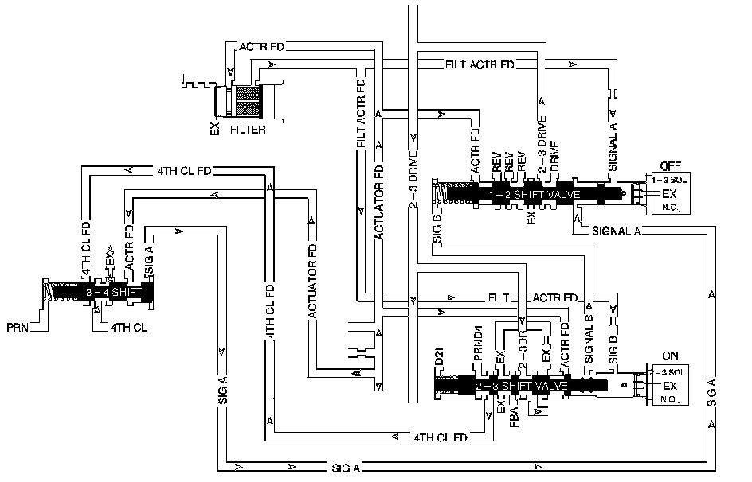

4L80-E / 4L85-E Automatic Transmission
DTC P0756

Circuit Description
The 2-3 shift solenoid (SS) valve controls fluid flow acting on the 2-3 shift valve. The 2-3 SS valve is a normally open exhaust valve used with the 1-2 SS valve in order to allow for 4 different shift combinations.
When the transmission control module (TCM) detects a 4-3-3-4 gear ratio, then DTC P0756 sets. DTC P0756 is a type A DTC.
DTC Descriptor
This diagnostic procedure supports the following DTC:
DTC P0756 2-3 Shift Solenoid Valve Performance - No First or Second Gear
Conditions for Running the DTC
^ No AT ISS DTCs P0716 or P0717.
^ No OSS DTCs P0722 or P0723.
^ No TCC stuck ON DTC P0742.
^ No transmission component slipping DTC P0894.
^ No shift solenoid electrical DTCs P0973, P0974, P0976 or P0977.
^ The system voltage is 8-18 volts.
^ The engine is running for more than 5 seconds.
^ The transmission OSS is 150 RPM or greater.
^ The transmission ISS is between 150 RPM and 6500 RPM.
^ The calc. throttle position is 8 percent or greater.
^ The transmission fluid temperature (TFT) is between 20° C (68° F) and 130° C (266° F).
^ The engine torque is greater than 50 N.m (37 lb ft).
Conditions for Setting the DTC
The following conditions both occur twice in one trip:
Condition 1
The TCM commands 1st gear, and the gear ratio indicates 4th gear, 0.98:1 to 1.03:1 for 2.5 seconds or greater.
Condition 2
The TCM commands 2nd gear, and the gear ratio indicates 3rd gear, 0.98:1 to 1.03:1 for 3 seconds or greater.
Action Taken When the DTC Sets
^ The TCM requests the engine control module (ECM) to illuminate the malfunction indicator lamp (MIL).
^ The TCM commands a soft landing to 2nd gear.
^ The TCM commands maximum line pressure.
^ The TCM freezes transmission adaptive functions.
^ The ECM records the operating conditions when the Conditions for Setting the DTC are met. The ECM stores this information as Freeze Frame and Failure Records.
^ The TCM records the operating conditions when the Conditions for Setting the DTC are met. The TCM stores this information as Failure Records.
^ The TCM stores DTC P0756 in TCM history.
Conditions for Clearing the MIL/DTC
^ The ECM turns OFF the MIL after the third consecutive drive trip in which the TCM does not send a MIL illumination request.
^ A scan tool can clear the DTC.
^ The TCM clears the DTC from TCM history if the vehicle completes 40 warm-up cycles without a non-emission related diagnostic fault occurring.
^ The TCM cancels the DTC default actions when the fault no longer exists and the ignition switch is OFF long enough in order to power down the TCM.
Diagnostic Aids
^ Verify that the transmission meets the specifications in the Shift Speed table. Refer to Shift Speed.
^ Other internal transmission failures may cause more than one shift to occur.
^ The customer may have a concern with an engine over-rev condition or neutral condition in 4th gear.
^ DTC P0756 defaults to an elevated line pressure condition which may result in partial TCC apply. This may produce an idle surge that could stall the engine.
Test Description
The number below refers to the step number on the diagnostic table.
2. This step tests that the TCM commanded all shifts, that all shift solenoid valves responded correctly, but that all the shifts did not occur.